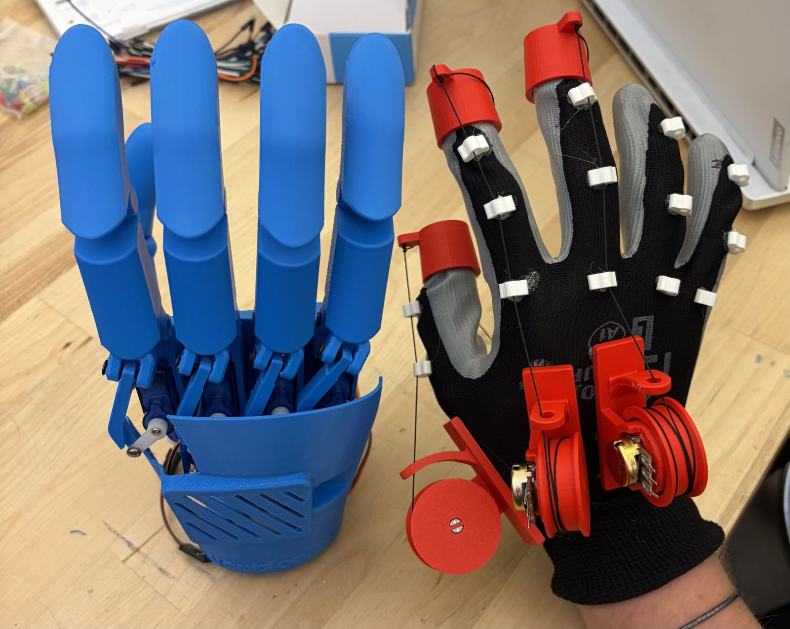
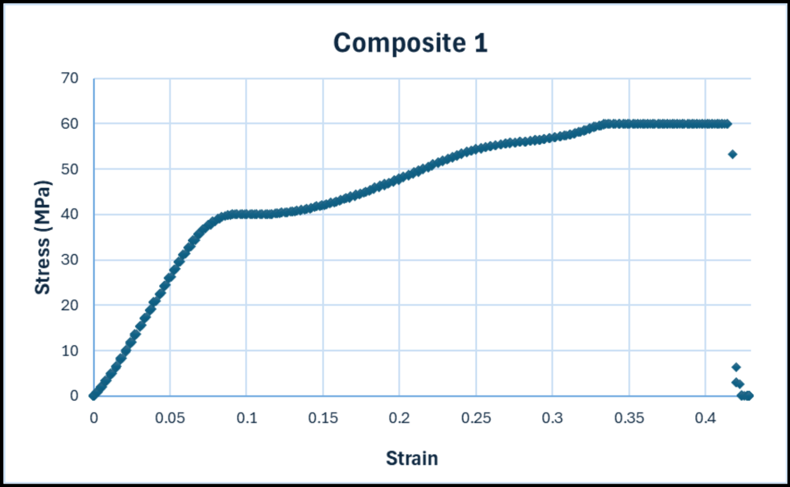
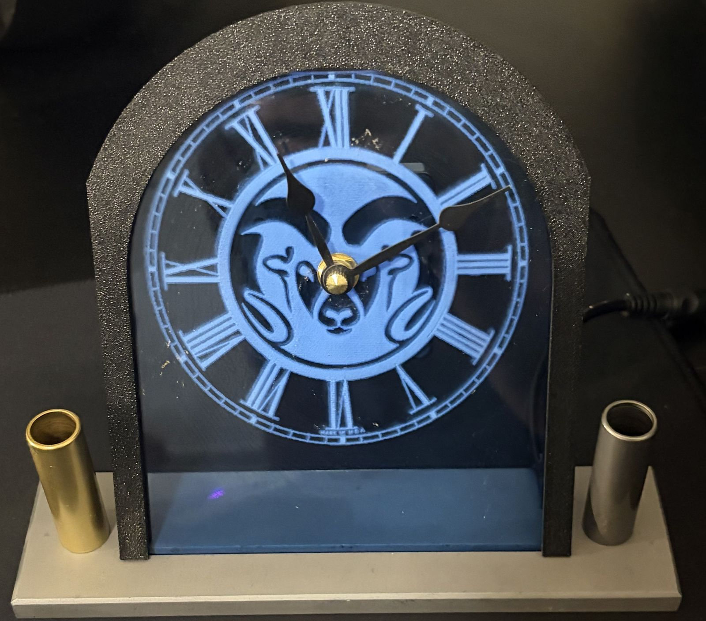
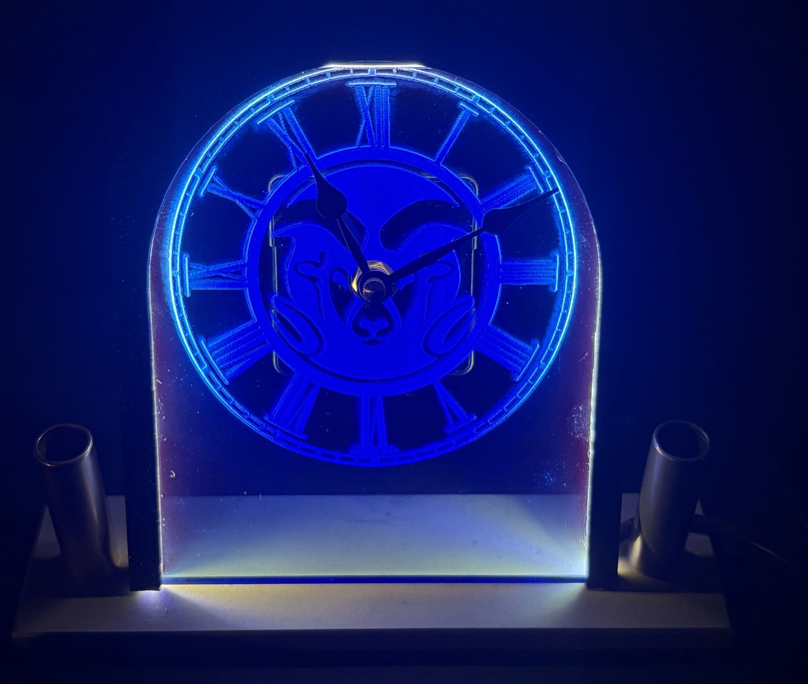
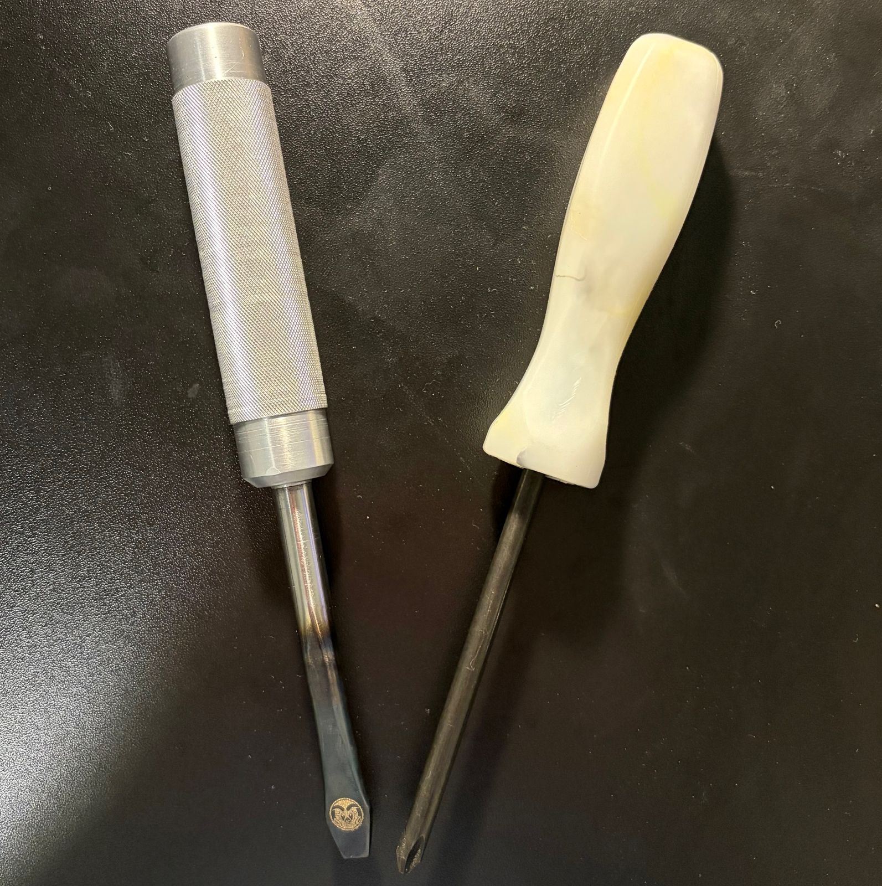
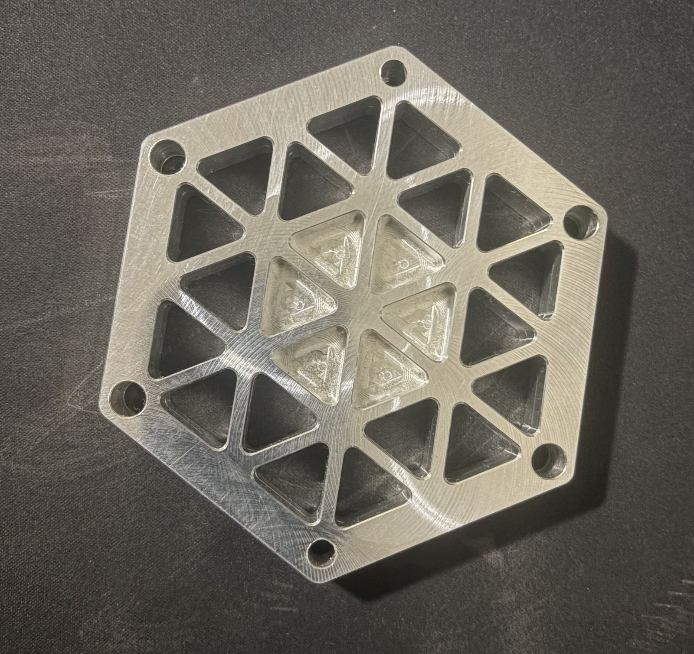

Coursework
My classes so far have included many interesting and useful projects that have taught me new skills and lessons.
In addition to the projects from the classes below, I have also finished many of the major mechanical engineering courses, including Thermodynamics 1 and 2, Fluids, Machine Design, and 3D Modeling. I hope to add Dynamics of Machines, Heat and Mass Transfer, and Thermofluid Science Lab next semester.
Mechatronics

Bionic Hand
Through Mechatronics 1 and 2, I have gotten exposure to many different electrical and control systems, as well as various components. Currently, in Mechatronics 2, my project team is working on creating a servo-controlled, 3D-printed hand that will actuate based on a glove the user is wearing. The hand will have an additional mode to automatically play rock, paper, scissors against the user, reading the user's hand position and comparing it to its own randomly generated position to decide a winner. This output will be displayed on an LCD mounted on the back of the hand.
Materials

Composite Materials
In my materials class, we covered and tested many different types of materials, as well as the corrosion and wear they may experience over time. The lab for this course culminated in a composite design challenge where we had to design and create a composite within the given dimensions and compete with other students. My group created a layered composite using resin-impregnated cotton and thin nylon strings as fibers along the tensile direction to maximize tensile strength. Our team came in third overall with an ultimate tensile strength of 5,945 Newtons and a strength-to-weight ratio of 4.92 MPa per gram.
Manufacturing


Clock
This assignment was one of the larger projects I got to take on in my manufacturing class. The objective was to use various mill and lathe techniques to build a clock with integrated pencil holders on either side. This project emphasized metrology and tolerancing, showing how overly tight tolerances make a part difficult to manufacture and overly loose tolerances cause improper assembly or poor fit.
I gained hands-on experience with manual mills and lathes, learned to select speeds and feeds for different materials, and saw the differences in machinability and applications between aluminum, steel, and brass. In addition to the basic requirements, I was also able to anodize the aluminum base, laser engrave the face, and build a custom lighting system to improve the finish and add color to my project.

Screwdriver Set
The goal of this assignment was to create an injection-molded Phillips head screwdriver and an aluminum flathead screwdriver with a hardened steel shaft. It introduced heat treatment, flat shank creation, CNC lathe operations, and safe handling of high-temperature metals and open flames.
Through this project, I also learned the fundamentals of injection molding, including the force required to fill a mold, and why sharp edges should be avoided in molded designs.

CNC Coaster
The coaster project for this course was used to demonstrate proficiency with CNC milling. I first completed Haas's online CNC training course, then an in-person practical exam. The exam was to check and set up the CNC mill and run the CNC code to make the coaster. By completing this, I earned my Haas CNC mill certification.
This process gave me familiarity with common G- and M-codes, as well as a foundation in CNC machining principles.